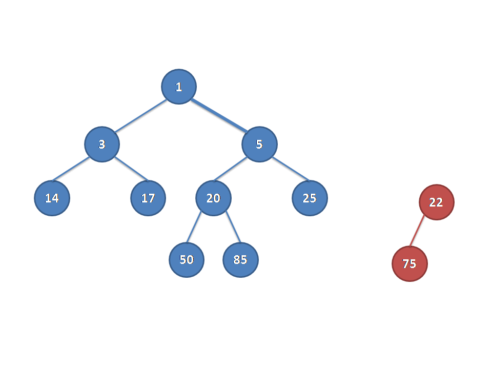
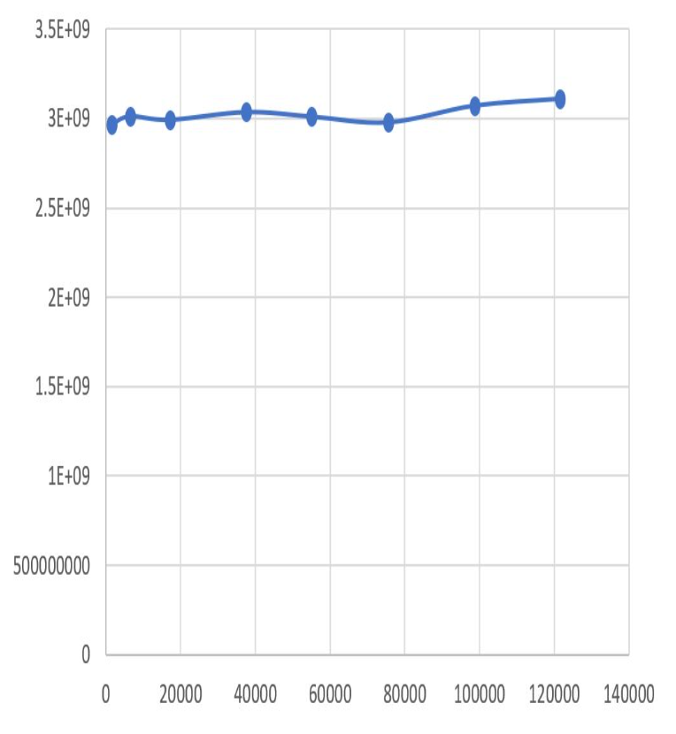
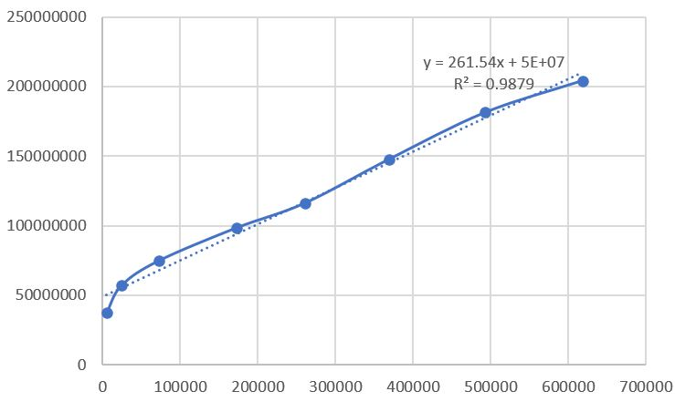
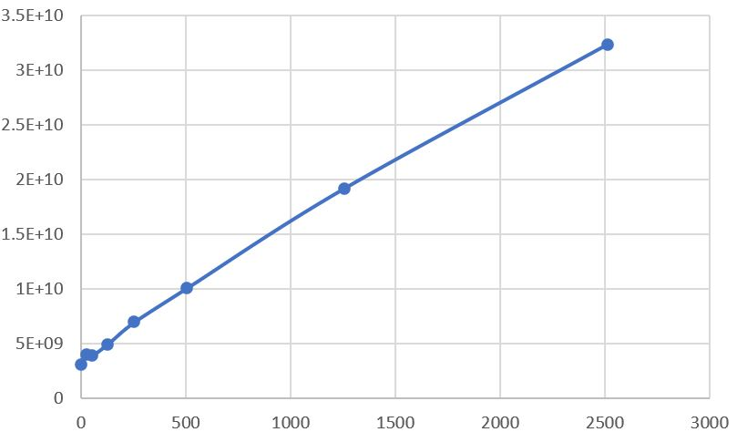

Shortest Path Algorithm with Heaps
邓子烽
宋庭聿
尹浩霖
Dijkstra(V, E, src) {
heap.push(src);
while (|heap| > 0) {
v = heap.top();
heap.pop();
for all edge e start from v {
if v.distance + e.length < e.end.distance {
slack e.end.distance;
heap.push(e.end);
}
}
}
}
class PriorityQueue <key_type> {
key_type Top();
void Push(const key_type& x);
void Pop();
size_t Size();
};
class BinaryHeap : PriorityQueue;
class LeftistHeap : PriorityQueue;
class FibonacciHeap : PriorityQueue;
Null path length
左偏树的重要性质
合并
插入
插入
合并最小值
Merge1( PriorityQueue H1, PriorityQueue H2 )
{
/* single node */
if ( H1->Left == NULL )
H1->Left = H2;
else {
/* Step 1 & 2 */
H1->Right = Merge( H1->Right, H2 );
if ( H1->Left->Npl < H1->Right->Npl )
SwapChildren( H1 ); /* Step 3 */
H1->Npl = H1->Right->Npl + 1;
}
return H1;
}
如下两棵树需要被合并
实际上也是合并
在去掉最小值之后，合并剩下的两棵子树
实际上也可以被归结为合并操作
1. 切断孩子
2. 替补顶层
3. 顶层度数相同的，贪心地合并
3. 顶层度数相同的，贪心地合并
3. 顶层度数相同的，贪心地合并
3. 顶层度数相同的，贪心地合并
3. 顶层度数相同的，贪心地合并
3. 顶层度数相同的，贪心地合并
4. 选取Min Node
节点最大度数
$degree(x)<\lfloor \lg{n} \rfloor$
|
均摊时间
Push(): $\Theta(1)$
Top(): $\Theta(1)$
Pop(): $O(\lg n)$
|
空间
$O(n)$
int main() {
ReadGraph();
Work("Binary Heap",
new BinaryHeap<VertexDist, MAX_EDGE>);
Work("Leftist Heap",
new LeftistHeap<VertexDist, MAX_EDGE>);
Work("Fibonacci Heap",
new FibonacciHeap<VertexDist, MAX_EDGE>);
return 0;
}线性回归方程 ｜ 运行时间和单词数
线性回归方程 ｜ 运行时间和映射数
线性回归方程 ｜ 运行时间和减少数
